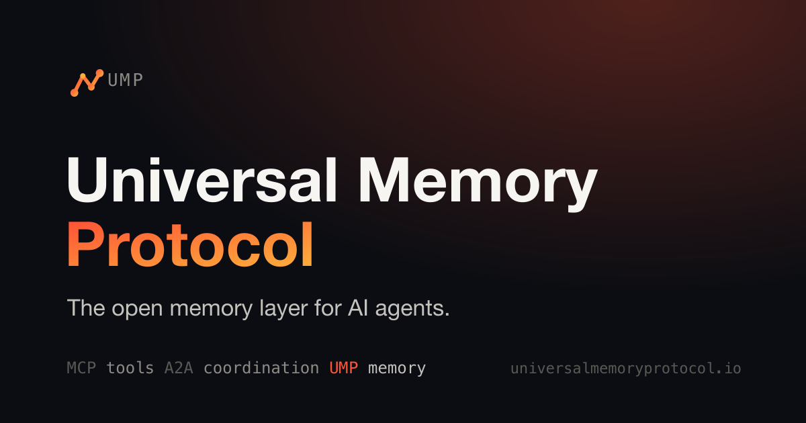

THE FRONT PAGE
EDITOR'S NOTE: As we watch consumer hardware degrade into surveillance outposts and modern software bloat strain legacy architectures, the option remains to either accept this systematic erosion of craft or build something that respects the constraints of a finite machine. #The quiet compromise of engineering discipline in service of automated data extraction and token consumption.
Defense officials have quietly elevated counterintelligence warnings regarding Israeli surveillance operations targeting domestic systems. The shift underscores a growing friction between diplomatic alignment and the raw security discipline required to protect compromised dual-use infrastructure.
As autonomous coding agents move from novelty to infrastructure, new benchmarks are forcing a hard look at the exact computational overhead required to patch basic bugs. The trade-off is stark: outsourcing routine debugging to LLMs introduces a compounding tax of non-deterministic token spend that often outpaces the cost of traditional, deterministic engineering discipline.
Researchers have mapped the discrete partitioning of decision trees directly to the continuous velocity fields of diffusion models. While the unification promises to ground generative modeling in deterministic logic, it risks introducing the optimization instability of continuous flows into traditionally robust tree-based architectures.

The Universal Memory Protocol attempts to establish a shared format for agent state, offering interoperability at the obvious risk of flattening nuanced, application-specific context into a lowest-common-denominator schema.
The transition from Python to Rust promises elimination of runtime errors but introduces significant cognitive overhead in borrow checking. For engineering teams, the trade-off is a steep decline in prototyping speed for questionable gains in predictable performance.
The major update to Emacs' premier feed reader refactors core parsing logic to handle modern, bloated web feeds, though it forces users to choose between extensibility and the brittle nature of highly customized lisp environments.
The release introduces a deterministic sandbox designed to prevent autonomous agent tools from breaking containment. While it addresses a critical vulnerability in current LLM orchestration, the added layer introduces execution latency that may complicate real-time applications.
MODEL RELEASE HISTORY
No confirmed model releases were detected for this edition date.